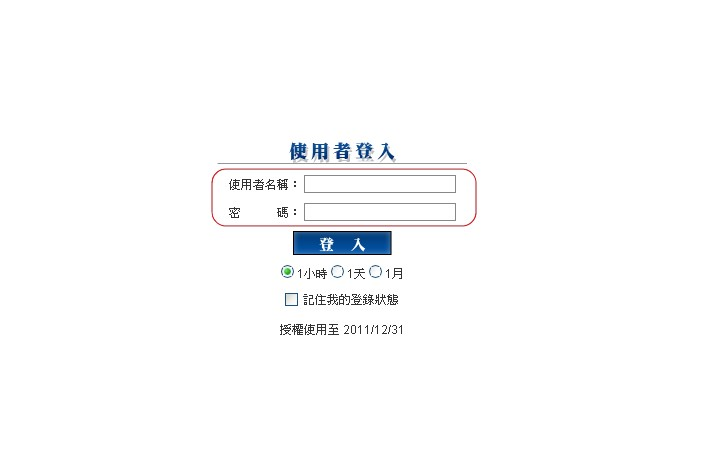
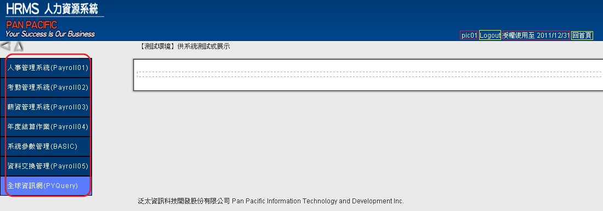
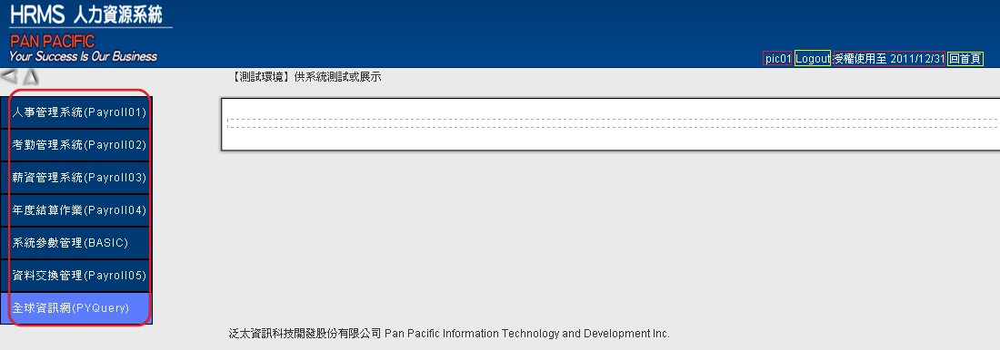

HRMS人力資源系統
壹、畫面介紹
A.首頁介紹:進入HRMS人力資源系統後輸入"帳號"、"密碼"，點選登入即可完成登入動作。參考(圖A-1)
(圖A-1)
B.內頁介紹:參考(圖A-2)
1.左邊為七大功能操作選項。 2.右上方功能選項，由左至右功能分別為 "登入者帳號顯示"、"登出按鈕"、"權限使用到期日期"、"回首頁按鈕"。 (※授權使用日期接近時，系統會自動跳出提醒視窗，提醒到期日) (圖A-2)
1.左邊為七大功能操作選項。
2.右上方功能選項，由左至右功能分別為
"登入者帳號顯示"、"登出按鈕"、"權限使用到期日期"、"回首頁按鈕"。
(※授權使用日期接近時，系統會自動跳出提醒視窗，提醒到期日)
(圖A-2)
回首頁